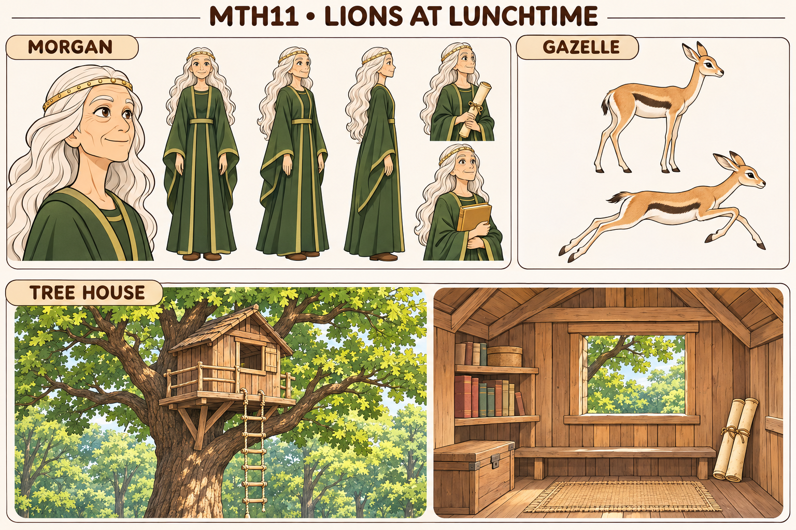
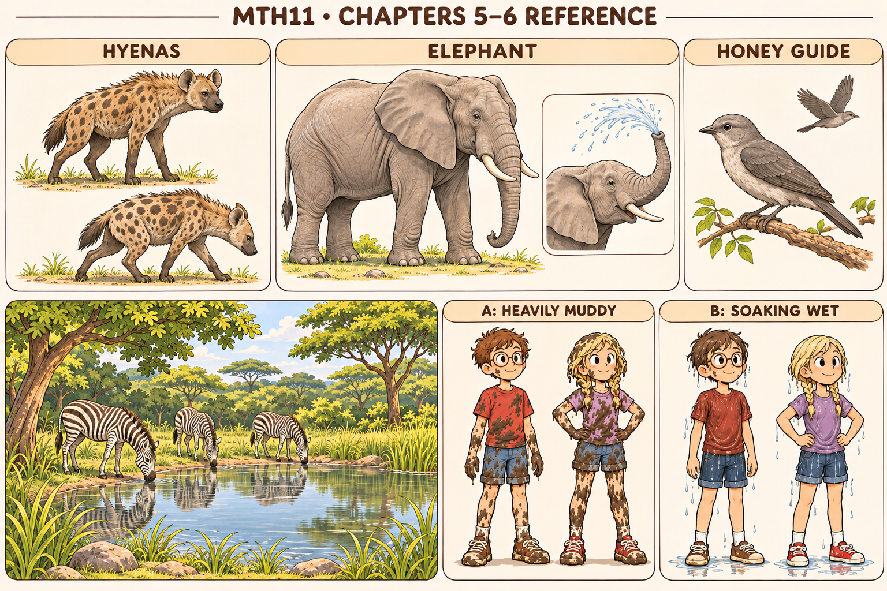
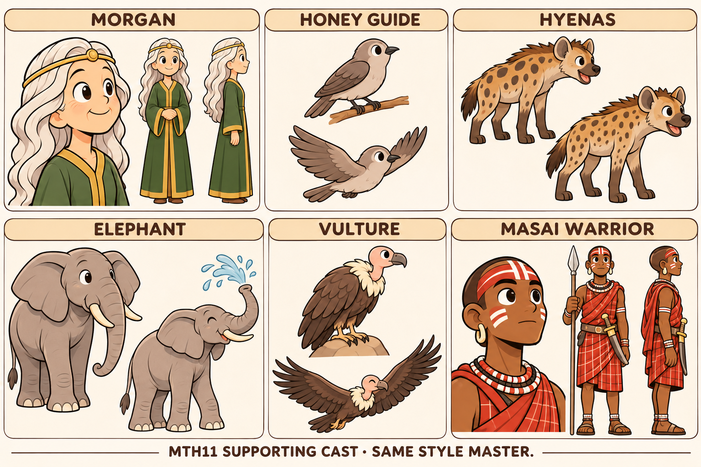

11권 · 장면 연속성 기준
상태: 원문 기반 사전 제약 정리. 각 장의 실제 이미지 생성 전 원문·시트 재검토와 장면별 계획을 추가합니다.
공통 제작 기준
- 4권 얼굴·화풍 + 11권 반팔·반바지·애니의 땋은 머리.
- Morgan은 출발 전 등장하고 아프리카에 동행하지 않습니다.
- 책 속 동물 사진을 나무집의 실제 동물로 그리지 않습니다.
- 강가의 진흙 → 씻는 장면 → 젖은 옷과 마르는 과정은 장면 순서대로 기록합니다.
- 실제 출현 전 사자·전사·동물을 미리 삽입하지 않습니다.
- 16장 연속 배치 생성 후 실제 경계를 측정해 자르고, 경계 오버레이·전체 타일·원본 크기 표본을 검수합니다.
초반 참조 · Morgan / 가젤 / 나무집

Morgan의 초록 로브는 제작 색상입니다. 기존 두루마리는 두 개이며, 새 두루마리는 원문에 등장하는 시점부터 추가합니다. 가젤은 Frog Creek의 안내 개체와 아프리카 무리를 구분합니다.
2장 · 아프리카 동물과 강둑 배치

가까운 강둑: 기린·얼룩말. 반대편: 가젤·누. 아직 헤엄치지 않습니다. Morgan은 아프리카에 동행하지 않으며, 아이들은 깨끗하고 마른 여름 복장을 유지합니다.
새 두루마리: Morgan → Annie(1장) → Jack(2장 사다리로 나가기 전). 연구서는 Jack이 읽으며, 배낭은 아직 나무집 바닥에 있습니다.
3장 · Disaster
애니는 강가로 앞서 가고 잭은 기린·얼룩말을 관찰합니다. 잭은 책과 노트를 꺼내 기록한 뒤 배낭에 넣습니다. 배낭 속 빵·땅콩버터는 아직 꺼내지 않습니다. 오후의 아지랑이, 깨끗한 여름복장을 유지합니다. 애니가 사라져도 진흙 장면은 4장부터 보여줍니다.
4장 · Mud Bath
애니는 강 옆 검은 진흙 구덩이에 가슴 → 목 → 턱 높이로 잠깁니다. 잭은 배낭을 강둑에 내려놓고 무릎을 꿇으며, 뿌리를 가리킨 뒤 떨어진 나뭇가지를 가져와 당깁니다. 누는 원문에 물에 뛰어드는 시점부터 수영합니다. 독수리 출현과 구출 후 잭이 진흙을 묻히는 변화는 후속 장면까지 앞당기지 않습니다.
4장 · 진흙 구조 상태·공간 참조

진흙 구덩이는 가까운 둑 옆이며 파란 강물과 구분됩니다. 애니는 가슴에서 턱 높이까지 잠기고 얼굴·손은 드러납니다. 잭은 배낭을 마른 둑에 내려놓고 나뭇가지를 사용합니다. 구출 후의 진흙 상태나 독수리는 원문 등장 시점부터 별도로 적용합니다.
4–5장 · 구출 이후와 독수리

0087 구출 이후 두 아이의 옷·손·신발은 진흙 상태를 유지합니다. 잭이 안경을 만진 뒤 렌즈 얼룩이 생깁니다. 배낭은 강둑에 남아 있고 5장 후속 장면에서 회수합니다. 독수리는 한 마리이며, 하이에나는 아직 등장하지 않습니다.
5장 시작: 애니는 같은 가까운 강둑을 따라 깨끗한 모래 착륙지로 이동해 누를 유도합니다. 강을 건너지 않습니다. 공간 시트보다 실제 원문의 이동 방향과 장면별 지시를 우선합니다.
5장 · Ha-Ha
0097 잭이 배낭을 회수하고 이후 착용합니다. 두 아이는 진흙투성이이고 안경 얼룩도 유지합니다. 0101부터 두 마리의 갈색 점박이 하이에나가 등장하며, 0111 도망갑니다. 괴물 흉내는 아이들 표정과 손짓으로만 표현합니다. 0114 연못 발견, 0115 배낭을 마른 풀에 내려놓음, 0116 큰 동물은 아직 그림자·움직임으로만 암시합니다.
6장 · Spick-and-Span
0117부터 코끼리 한 마리. 0120 잭 뒤로 물이 뿌려짐, 0121–0122 애니의 진흙이 점차 씻김, 0123 애니는 깨끗하고 흠뻑 젖은 상태에서 잭이 씻기 시작합니다. 0124 둘 다 깨끗하고 젖은 여름복장 유지, 0126 배낭 회수, 0128 작은 칙칙한 회색 새가 처음 나타납니다. 사자는 아직 보이지 않습니다.
5–6장 · 하이에나·코끼리·회색 새·연못

하이에나는 두 마리, 코끼리는 한 마리, 새는 작은 칙칙한 회색입니다. 같은 여름복장을 유지하며 진흙 상태에서 씻기는 과정을 거쳐 깨끗하고 젖은 상태로 바뀝니다. 평온한 작은 연못을 큰 강과 구분하고 각 동물은 원문 등장 시점부터 적용합니다.
보조 캐릭터 · 4권 시트와 동일한 화풍 기준

이 시트는 4권 공개 캐릭터 페이지와 11권 잭·애니 승인 시트의 선 굵기·눈 비율·면색·얕은 그림자 방식을 보조 캐릭터에 적용한 새 스타일 마스터입니다. 기존 동물 시트는 종·상태·공간 사실 확인용으로 남기고, 이후 장면 생성에서는 이 v2 시트를 화풍 참조로 우선 사용합니다.
8장 후반 · 피크닉과 귀로
177 애니, 178 잭, 179 전사 순서로 샌드위치를 먹습니다. 182 전사가 숲으로 사라진 뒤 다시 나타나지 않습니다. 184 음식 정리, 187 배낭 착용, 188 연못 코끼리, 190 강의 누와 얼룩말을 지나 191 나무집 아래에서 처음 사자 무리를 발견합니다. 숫자·라벨·말풍선이 들어간 생성본은 공개하지 않습니다.
9–10장 · 사자와 귀환
사자는 수사자 한 마리·암사자 세 마리와 수가 명시되지 않은 새끼 무리입니다. 206 두 하이에나, 207 수사자 눈뜸, 208 하품. 212–214 기린 아래서 이동하고 215 애니부터 사다리로 올라갑니다. 217 두루마리는 반짝이는 답, 219 애니가 기린 코에 작별 인사합니다. 222부터 Frog Creek이며 아프리카 동물·전사는 대사 속 회상만 있고 실제 등장하지 않습니다. 224 세 두루마리를 두고 227 하강. 엄마는 마지막에 목소리만 등장합니다.
BOOK 11 SOURCE-REVIEWED CHARACTER AND CONTINUITY REFERENCE Character ID: MTH-JACK Name: Jack Traits: eight-and-a-half-year-old boy; short brown hair; large round glasses; red short-sleeve shirt; blue denim shorts; brown sneakers; cautious, observant posture Book override: Book 11 original illustrations: short-sleeve shirt, shorts and sneakers. Jack keeps round glasses and short dark hair; Annie has two braids. Preserve series facial identity; override default long sleeves/jeans or bob hair for this book. Character ID: MTH-ANNIE Name: Annie Traits: seven-year-old girl; blonde hair in two braids; lavender T-shirt; denim shorts; red sneakers; energetic, fearless posture Book override: Book 11 original illustrations: short-sleeve shirt, shorts and sneakers. Jack keeps round glasses and short dark hair; Annie has two braids. Preserve series facial identity; override default long sleeves/jeans or bob hair for this book. Character ID: MTH04-MORGAN Name: Morgan Traits: Morgan le Fay; elderly woman, long white hair established in series references; source-local robe. No fixed robe color inferred from grayscale Book 11 art. Book override: See original source images and local presence constraints. Character ID: MTH09-MOM Name: Mom Traits: Mother’s voice at the end of Chapter 10. Physical appearance is unspecified; keep offscreen. Book override: See original source images and local presence constraints. Character ID: MTH11-MASAI-WARRIOR Name: Masai warrior Traits: Tall man; face painted in bright colors; spear and curved sword at belt. Use MTH11-IMG-018 for the original silhouette. Silent throughout the encounter. Book override: See original source images and local presence constraints. Character ID: MTH11-GAZELLES Name: Thomson’s gazelles Traits: Small delicate deerlike animals. The guide gazelle at Frog Creek is distinct from later herd staging; do not show an animal merely recalled or pictured. Book override: See original source images and local presence constraints. Character ID: MTH11-GIRAFFES Name: Giraffes Traits: Tall giraffes, long legs and necks, patterned coats; keep the rescue giraffe distinct from herd/background animals where source distinguishes her. Book override: See original source images and local presence constraints. Character ID: MTH11-ZEBRAS Name: Zebras Traits: Black-and-white stripe patterns; individual patterns differ. Do not give every zebra an identical stripe texture. Book override: See original source images and local presence constraints. Character ID: MTH11-WILDEBEESTS Name: Wildebeests Traits: Horned migrating herd; preserve opposite-bank, swimming and grazing phases. Book override: See original source images and local presence constraints. Character ID: MTH11-VULTURE Name: Vulture Traits: Large vulture circles overhead in Chapter 4; no invented dialogue. Book override: See original source images and local presence constraints. Character ID: MTH11-HYENAS Name: Hyenas Traits: Two spotted brown animals with sloping backs. Laughter is animal sound, not human speech. Book override: See original source images and local presence constraints. Character ID: MTH11-ELEPHANT Name: Elephant Traits: Large elephant at the pond; trunk sprays water. No invented dialogue. Book override: See original source images and local presence constraints. Character ID: MTH11-HONEY-GUIDE Name: Honey guide Traits: Small bird with dull gray feathers. Annie interprets its behavior; the bird never speaks English. Book override: See original source images and local presence constraints. Character ID: MTH11-BEES Name: Bees Traits: Bees around the hive, scattered by waved weeds. Do not invent attacks or stings. Book override: See original source images and local presence constraints. Character ID: MTH11-LION Name: Male lion Traits: One large male lion under the tree in Chapters 8–9; golden eyes, large teeth. Keep absent from earlier real-world scenes. Book override: See original source images and local presence constraints. Character ID: MTH11-LIONESSES Name: Lionesses Traits: Three lionesses in the pride under the tree in Chapter 9. Book override: See original source images and local presence constraints. Character ID: MTH11-LION-CUBS Name: Lion cubs Traits: A bunch of cubs; exact count unspecified. Do not invent a fixed count as a source fact. Book override: See original source images and local presence constraints. Chapter continuity constraints: Frog Creek grocery walk and tree house. Morgan is explicitly absent at first, then appears after the soft voice. She remains at departure; do not carry her into Africa. Animal pictures in the Africa book are pictures, not live animals inside the tree house.